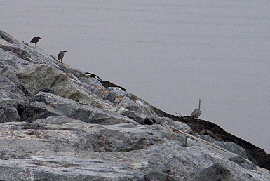

Singapore Trav-E-Logs ©
Singapore day trip
| |
| Monitor lizard along causeway. | |
| back: Laos | |
Jul 23, 2006, Singapore
Walked along the causeway between the two countries, noticing shore birds at water's edge. Also saw a few monitor lizards, which became uncomfortable with our picture taking. Who thinks about wildlife in Singapore? Snapshot of apartment complex shows how real life can affect the daytime aesthetics of a buiding. Those are not flags, but laundry put out to dry on bamboo poles.
 Bill
Email me at the juno.com address "dancer2SEAsia"
"The backpacker discovers all people are beautiful. It's the Governments that are evil."
Special Topics:
Hi Folks,=================================
Joined a few other backpackers from the guesthouse in Johor Baru for a day trip
to Singapore, using a combination of bus, taxi, and feet for transportation. Not
much excitment -- purchased a spare battery for the new camera. A few snapshots.
=================================

------------------------------